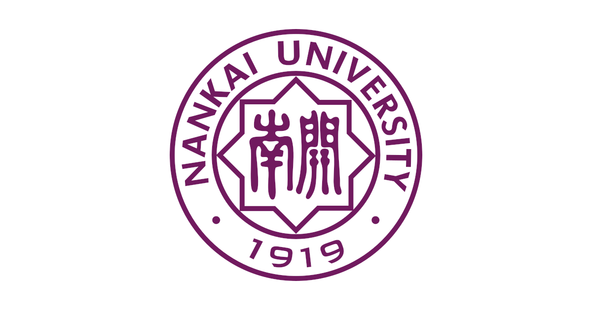

一、慢病安全用药科普
1. 不随意增减药量，不私自使用偏方替代正规药物。
2. 定期清理家中过期药品，内服、外用药品分开存放。
3. 多种慢性病药物错开时间服用，避免药物冲突。
4. 跟随社区医护完成定期随访，按医嘱调整服药方案。

围绕慢病安全用药、保健品防骗、居家防跌倒和津南本地健康防护，帮助中老年居民看懂基础健康信息。
1. 不随意增减药量，不私自使用偏方替代正规药物。
2. 定期清理家中过期药品，内服、外用药品分开存放。
3. 多种慢性病药物错开时间服用，避免药物冲突。
4. 跟随社区医护完成定期随访，按医嘱调整服药方案。
1. 保健品无法替代降压、降糖等治疗药物。
2. 免费体检、上门推销保健产品多为营销骗局，切勿轻信。
家中地面保持干燥，夜间床边放置小夜灯；日常饮食少油少盐，多食用蔬菜、蛋奶，养护骨骼。
1. 长期接触盐碱土壤易诱发皮肤瘙痒、皲裂，日常做好皮肤保湿防护。
2. 浅层地下水氟含量偏高，长期饮用易加重骨质疏松，优先选择低氟饮用水。
3. 可选择早晚乘凉时段前往社区参与义诊筛查，避开正午高温。
AI 入口仍是占位链接，接入真实平台后替换 href 即可。